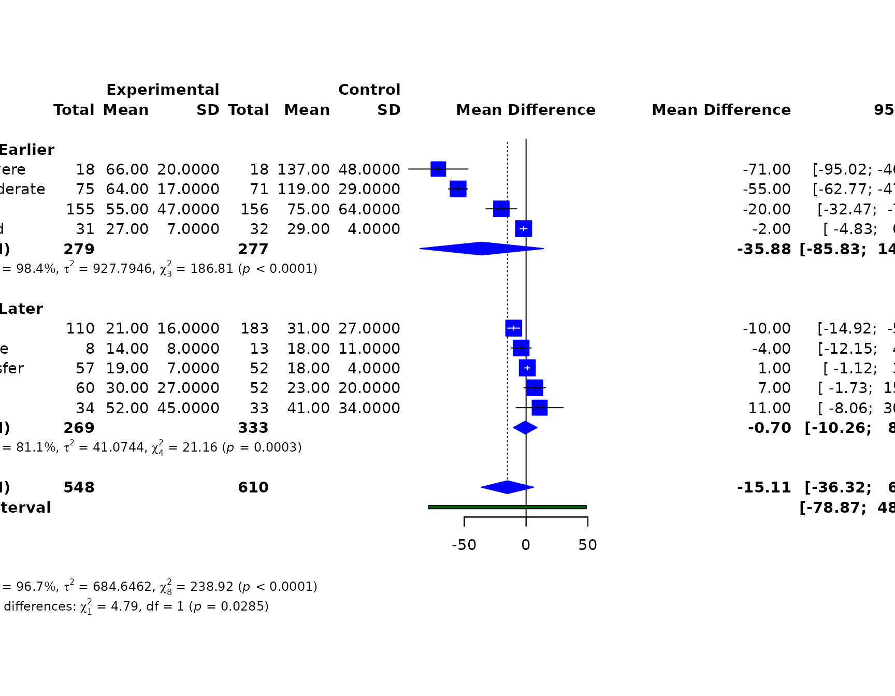
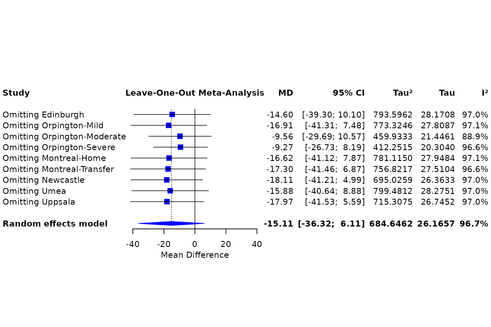
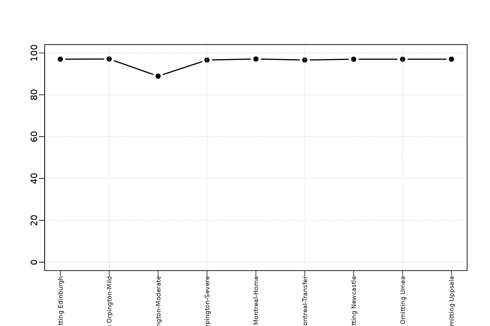
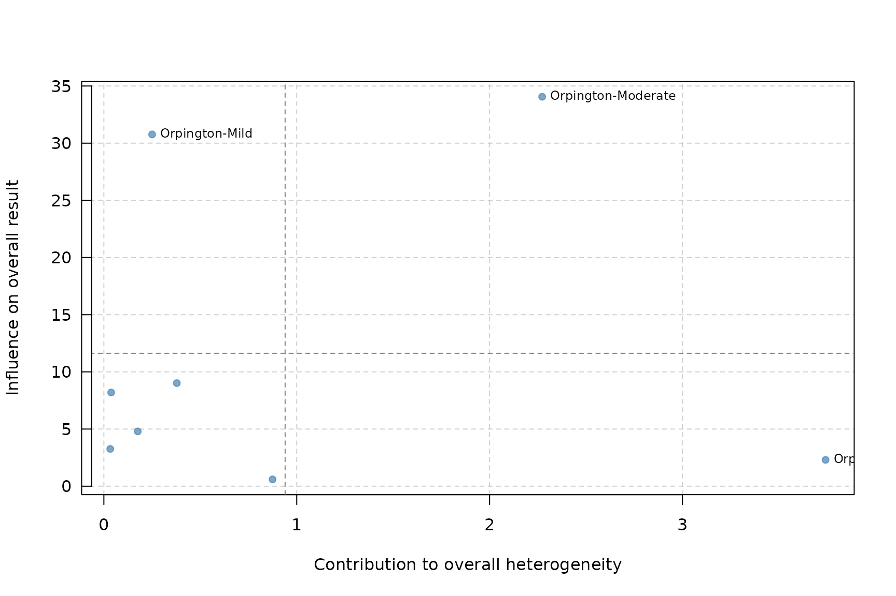
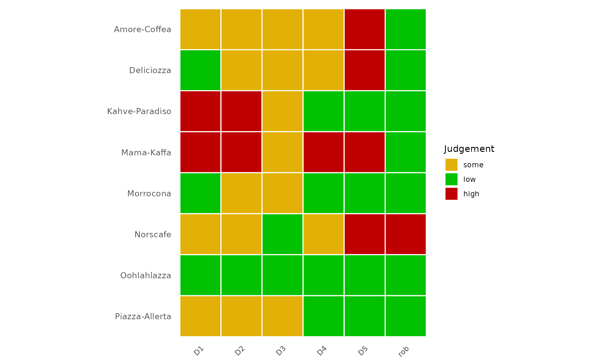
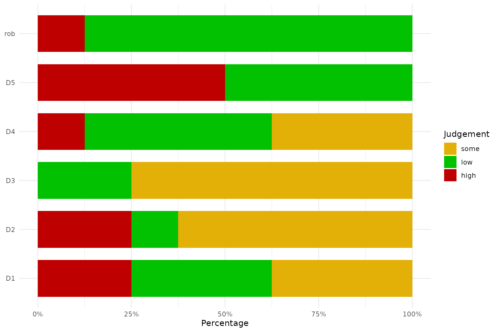

Case study: Continuous outcomes and study appraisal
Source:vignettes/case-mean-appraisal.Rmd
case-mean-appraisal.RmdThis case study demonstrates continuous-outcome meta-analysis and then uses a second bundled dataset to show risk-of-bias visualisation.
library(metapropul)
data("dat_normand1999", package = "metapropul")
dat_normand1999$period <- ifelse(
seq_len(nrow(dat_normand1999)) <= 4, "Earlier", "Later"
)Mean difference and subgroup analysis
mean_md <- meta_mean(
dat_normand1999,
mean.e = "m1i", sd.e = "sd1i", n.e = "n1i",
mean.c = "m2i", sd.c = "sd2i", n.c = "n2i",
studylab = "source", subgroup = "period",
measure = "MD", model = "random", ci_method = "HK"
)
summary(mean_md)
#>
#> Meta-analysis Summary
#> ----------------------
#> Number of studies: 9
#> Total observations: 1,158 (548 experimental, 610 control)
#>
#> Pooled MD = -15.11 (95% CI: -36.32, 6.11)
#> Prediction interval: -78.87 – 48.66
#> p-value = 0.139
#> Q = 238.92 (df = 8), p < 0.001
#> I² = 96.7%
#> Tau² = 684.6462
#>
#> Subgroup results
#> ----------------
#> Earlier: -35.88 (95% CI: -85.83, 14.06), Tau² = 927.7946, I² = 98.4%
#> Later: -0.70 (95% CI: -10.26, 8.86), Tau² = 41.0744, I² = 81.1%
#>
#> Test for subgroup differences (random): Q = 4.79, df = 1, p = 0.029
#>
#> Notes
#> -----
#> - Continuous outcomes pooled as MD.
#> - I² quantifies the proportion of total observed variability attributable
#> to between-study heterogeneity rather than sampling error.
#> - However, I² increases with study precision and may approach 100% even
#> when Tau² remains unchanged.
#> - Therefore, I² should not be used alone to judge heterogeneity or decide
#> whether studies should be pooled.
#> - Tau² represents the variance of true effects across studies and is
#> generally more informative than I² for judging the magnitude of
#> heterogeneity.
#> - High I² observed. Interpret cautiously because I² may be inflated in
#> large or highly precise studies.
#> - The prediction interval shows the range of effects expected in a new
#> study and helps assess clinical relevance.
#> - Confidence interval method for random-effects model: HK.
#> - The subgroup-difference test assesses whether pooled effects differ
#> between subgroup levels; a non-significant result does not prove the
#> subgroups are equivalent.
#> - Subgroup-specific prediction intervals are not shown in this summary.
#> - Decisions to pool studies should be based on clinical relevance, not
#> solely on statistical heterogeneity.
#>
#> For study-level results: object$table
mean_md$meta.subgroup.summary
#> # A tibble: 2 × 6
#> Subgroup Estimate lower upper Tau2 I2
#> <chr> <dbl> <dbl> <dbl> <dbl> <dbl>
#> 1 Earlier -35.9 -85.8 14.1 928. 98.4
#> 2 Later -0.699 -10.3 8.86 41.1 81.1A fixed-effect standardised mean difference provides a sensitivity analysis on a common scale.
mean_smd <- meta_mean(
dat_normand1999, "m1i", "sd1i", "n1i", "m2i", "sd2i", "n2i",
studylab = "source", subgroup = "period",
measure = "SMD", model = "fixed"
)
summary(mean_smd)
#>
#> Meta-analysis Summary
#> ----------------------
#> Number of studies: 9
#> Total observations: 1,158 (548 experimental, 610 control)
#>
#> Pooled SMD = -0.41 (95% CI: -0.53, -0.29)
#> p-value < 0.001
#> Q = 122.42 (df = 8), p < 0.001
#> I² = 93.5%
#> Tau² = 0.7887
#>
#> Subgroup results
#> ----------------
#> Earlier: -0.79 (95% CI: -0.96, -0.61), Tau² = 1.0087, I² = 96.0%
#> Later: -0.09 (95% CI: -0.26, 0.07), Tau² = 0.0930, I² = 74.9%
#>
#> Test for subgroup differences (common): Q = 31.32, df = 1, p < 0.001
#>
#> Notes
#> -----
#> - Continuous outcomes pooled as SMD.
#> - I² quantifies the proportion of total observed variability attributable
#> to between-study heterogeneity rather than sampling error.
#> - However, I² increases with study precision and may approach 100% even
#> when Tau² remains unchanged.
#> - Therefore, I² should not be used alone to judge heterogeneity or decide
#> whether studies should be pooled.
#> - Tau² represents the variance of true effects across studies and is
#> generally more informative than I² for judging the magnitude of
#> heterogeneity.
#> - High I² observed. Interpret cautiously because I² may be inflated in
#> large or highly precise studies.
#> - Common-effect model used; Tau² is reported descriptively but not used for
#> weighting.
#> - The subgroup-difference test assesses whether pooled effects differ
#> between subgroup levels; a non-significant result does not prove the
#> subgroups are equivalent.
#> - Subgroup-specific prediction intervals are not shown in this summary.
#> - Decisions to pool studies should be based on clinical relevance, not
#> solely on statistical heterogeneity.
#>
#> For study-level results: object$table
render_gt(table_meta(mean_md, title = "Continuous-outcome meta-analysis"))| Continuous-outcome meta-analysis | ||||
| Study | Mean (SD) | Total | Weight (%) | Mean Difference [95% CI] |
|---|---|---|---|---|
| 1 I² = proportion of total observed variability attributable to between-study heterogeneity. Not a significance test; magnitude depends on study precision and number of studies. | ||||
forest_meta(mean_md)
Influence and cumulative analyses
render_gt(table_influence(mean_md))| Study | Estimate [95% CI] | I² (% variability)1 | Tau² |
|---|---|---|---|
| 1 I² = proportion of total observed variability attributable to between-study heterogeneity. Not a significance test; magnitude depends on study precision and number of studies. | |||
forest_influence(mean_md)
render_gt(table_cumulative_meta(mean_md))| Step | Study | Estimate [95% CI] | I² (% variability)1 | Tau² |
|---|---|---|---|---|
| 1 I² = proportion of total observed variability attributable to between-study heterogeneity. Not a significance test; magnitude depends on study precision and number of studies. | ||||
forest_cumulative(mean_md)Heterogeneity and DOI assessment
plot_heterogeneity(mean_md)
plot_baujat(mean_md)
There are fewer than ten studies, so this example uses the DOI plot rather than treating funnel-asymmetry tests as reliable.
doi_plot(mean_md)Risk-of-bias figures
The bundled caffeine dataset contains five domain judgements and an overall judgement. The labels are passed as a custom appraisal scheme so the example uses exactly the levels present in the source data.
data("caffeine", package = "metapropul")
domains <- c("D1", "D2", "D3", "D4", "D5", "rob")
judgements <- unique(unlist(caffeine[domains], use.names = FALSE))
judgements <- judgements[!is.na(judgements)]
plot_rob(
caffeine, "study", tool = "Custom",
domains = domains, levels = judgements
)
plot_rob_summary(
caffeine, "study", tool = "Custom",
domains = domains, levels = judgements
)
Risk-of-bias judgements should inform interpretation and sensitivity analysis; they are not statistical weights and should not be converted mechanically into quality scores.